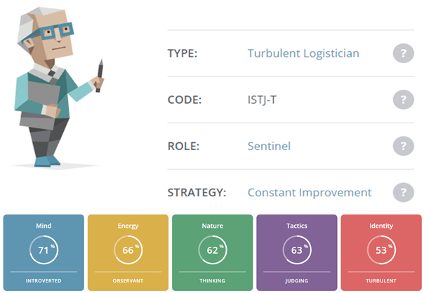
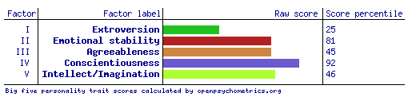
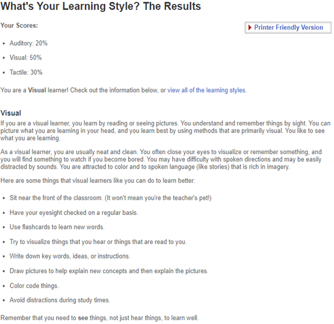

Personal Tests
Below are a few tests I undertook to gain a better understanding and insight into my own personal strengths and weaknesses. Although interesting, all of these tests should be taken with a healthy amount of speculation into their accuracy. As such, I will attempt to divine some conclusions based on the results.
16 Personalities Test
This test feels pretty well spot on from my perspective. I agree with most of the conclusions drawn and after reading about the type of Turbulent Logistician, gained some insight over choices I make on a day to day.
I feel as if these results show that I am an introverted and hard to collaborate with person, and in the same vein it shows that I work to constantly improve myself and have a desire to complete tasks set and have that more emotional interaction with the team.
I should look for people who have more extraverted tendencies for presentation purposes. I also think I would make a good group member as I have a constant need to improve. My personality type would indicate that I am both enthusiastic and logical with my work and tend to be cooperative, practical, and grounded based on my role of Sentinel.

Psychometric Test
A bit of a rehash of the first test, this shows that I am fairly introverted. Stable emotionally and an average person to have a good relationship with. That I think of my peers when making decisions and have a typical imagination and creative tendency. Nothing overly new with the diagnosis. A little reaffirming to see similar traits shown in this test when compared to the first.
I think these results will help me potentially be the level-headed person in the group. Be able to help sway decisions one way or another with my conscientiousness. I feel like I could be relatable, albeit a bit distant but happy to persevere throughout the project.
I should think to be patient and agreeable with my fellow group members. Be vocal when needed to interact with the group and maintain a stable demeanour when cooperating with my peers.

Learning Test
I was surprised by these results as I tend to do a lot of my current learning outside of IT is via podcast. It is how I take in news, entertainment, and historical interests. However, I am quite able to see something done once and be reproduceable by me almost immediately. It has helped me leaps and bounds in my current profession. I am a bit of a neat freak and will choose to clean over other tasks as I feel like it impedes my progress if not done.
It would mean that my group might have a more visual planning style to our meetings and/or coloured sections to different progress markers. A heavier focus on visual aspects in conversations and while projecting outcomes in documents.
I should look for like-learned people or people who do not have much preference in how things are structured to add a bit of informational diversity to the project.
